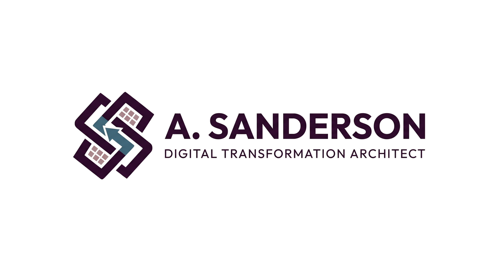

I engineer secure Microsoft environments that ensure compliance and security, give your team their time back by automating tasks, and provide leadership with total visibility over the business.
Most organisations have powerful tools at their fingertips, but lack the architectural strategy to make them work together. You are likely paying for comprehensive Microsoft licenses, only to find your team still relying on scattered files and manual workarounds.
I step in to bridge that gap, transforming your disconnected software into a unified, high-performance ecosystem.
What: Connect internal staff and external partners instantly, putting vital company resources right at their fingertips.
How: I architect secure Microsoft Teams and SharePoint intranets, complete with data-sharing best practices so information flows safely and smoothly.
Why: You eradicate messy email chains, enable rapid organised communication and centralised resource access ensuring your team never wastes time searching for the right resources or documents.
What: Stop wasting paid hours on manual data entry and repetitive tasks.
How: Using the Microsoft Power Platform, I build custom apps and automated workflows that do the heavy lifting behind the scenes.
Why: Routine processes happen instantly and without errors, freeing up your staff to focus on actual, valuable work rather than admin.
What: Protect your company data and maintain strict compliance, without making it harder for your team to work.
How: Using Microsoft Entra ID, Purview, and Intune, I deploy identity-driven access, Data Loss Prevention (DLP), and automated device provisioning.
Why: You get total peace of mind knowing your business is safe from threats no matter where staff log in from—while new hires enjoy the perk of laptops that securely configure themselves in minutes.
What: Get a clear, real-time picture of exactly how your business is performing.
How: I organise your data to build live Power BI dashboards, and safely prepare your systems to take advantage of Microsoft Copilot.
Why: You can make confident decisions based on hard numbers rather than guesswork, and safely prepare your business for the future of AI.
The market is full of certified consultants who build systems they will never have to use. They understand the technical theory, but lack the operational experience of sitting in both the admin's and end-user's seat and navigating the daily challenges of how a business actually works.
Standard IT agencies deploy generic packages, force your people to adapt, and disappear—until they can charge you hourly to resolve the roadblocks they built.
I don't deal in theory.
I bring a dynamic, battle-tested architectural approach to your business.
Having actively managed multi-geo Microsoft environments for over 15,000 users, I know exactly what it takes to build resilient systems that actually function in the real world.
Instead of forcing rigid packages, I specialise in resolving the complex issues that standard agencies abandon: engineering bespoke pathways the moment out-of-the-box software hits a dead end.
Service operations were bottlenecked by staff manually compiling job sheets, while field teams risked acting on outdated or inaccurate information the moment project details changed.
I engineered a Power Platform and SharePoint workflow that instantly dispatches digital job sheets and dynamically auto-updates them in real-time whenever core project data changes.
Absolute accuracy guaranteed and paperwork eradicated. Dispatch is instantaneous, recovering 20+ billable admin hours weekly while eliminating costly execution errors.
The business lacked a unified resource hub. This drove staff to spin up Teams channels without oversight, resulting in massive workspace sprawl where critical documents were trapped in endless email chains and isolated on local hard drives.
I created a definitive centralised SharePoint Intranet using hub-and-spoke architecture with automated content review workflows. This central hub was linked to an end-to-end Teams provisioning pipeline which routes all new workspace requests through automated management approval.
A bulletproof, governed ecosystem. Critical data is rescued from local PCs into a single source of truth.
Content is systematically reviewed for accuracy, and approved project workspaces deploy instantly with zero digital sprawl.
Legacy hybrid environments created massive security blind spots and unenforceable data governance, compounded by the operational bottleneck of IT manually configuring secure devices for a scaling workforce.
I architected a hardened Zero-Trust architecture utilizing bespoke Conditional Access models and custom data protection logic, seamlessly integrated into a fully autonomous, zero-touch device deployment engine.
Universal data governance achieved. Endpoint compliance is now bulletproof and automated, with the massive operational bonus of laptops securely configuring themselves out-of-the-box with zero IT intervention.
The appliance service team operated blindly, relying on retrospective reporting. Without unified data, it was impossible to track which specific appliance types or recurring fault patterns were driving the highest real-world operational costs.
I developed a bespoke 'central command centre' with Power BI analytics engine to track live diagnostic metrics. Simultaneously, the underlying data structure was rigorously optimized to act as a definitive source for Microsoft Copilot AI.
Total operational visibility achieved. Management immediately tracks and mitigates costly failure patterns as they happen; while the AI-ready foundation empowers Copilot to accurately answer natural language queries about complex repair trends.